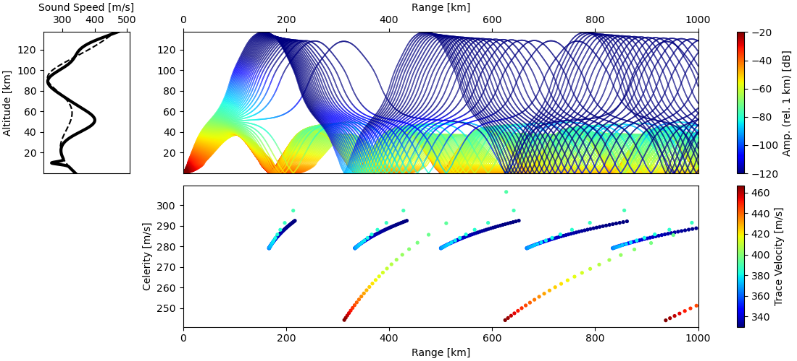

Quickstart
Single Azimuth Simulation
InfraGA/GeoAc can run propagation simulations using the effective sound speed in a 2D azimuthal plane (range vs. altitude), using a 3D Cartesian framework with moving media (i.e., winds), or using a spherical atmospheric layer geometry that matches the global geometry of propagation through the atmosphere. While the 2D and 3D methods are slightly faster, the more accurate physics and geometry of the spherical layer methods provides a more accurate framework for analysis and is the recommended method for general use.
Running the Simulation
Propagation of energy from a single point source on using the spherical atmosphere layer geometry can be accessed using the
infraga sph propCLI option. Running this with the--helpoption produces a summary of the usage (note: if you get an error about theinfragacommand not being found, make sure you have the conda environment active viaconda activate infraga_env):infraga sph prop --help
Usage: infraga sph prop [OPTIONS] Run spherical atmosphere geometry ray tracing analysis for a point source Examples: infraga sph prop --atmo-file ToyAtmo.met infraga sph prop --atmo-file ToyAtmo.met --config-file example.cnfg Options: --config-file TEXT Configuration file for simulation --atmo-file TEXT Atmosphere file --atmo-prefix TEXT Atmosphere file prefix (range dependent) --grid-lats TEXT Atmosphere grid latitudes file --grid-lons TEXT Atmosphere grid longitudes file --incl-min TEXT Minimum inclination angle (rel. horizontal) --incl-max TEXT Maximum inclination angle (rel. horizontal) --incl-step TEXT Inclination angle step resolution --inclination TEXT Single inclination angle --az-min TEXT Minimum azimuth angle (clockwise rel. N) --az-max TEXT Maximum azimuth angle (clockwise rel. N) --az-step TEXT Azimuth angle step resolution --azimuth TEXT Single azimuth angle --bounces TEXT Number of ground reflections (bounces) to consider --src-lat TEXT Source latitude --src-lon TEXT Source longitude --src-alt TEXT Source altitude --write-rays BOOLEAN Option to write [...].raypaths.dat output --write-topo BOOLEAN Option to write terrain info under first ray --freq TEXT Frequency for Sutherland-Bass losses --abs-coeff TEXT Scaling coefficient for Sutherland-Bass losses --z-grnd TEXT Ground elevation (flat ground, km rel. sea level) --write-atmo TEXT Option to write atmosphere data (for QC) --output-id TEXT User specified output file path --calc-amp BOOLEAN Option to turn off transport coefficient calculation --max-alt TEXT Maximum altitude for ray calculation --max-rng TEXT Maximum range for ray calculation --min-lat TEXT Minimum latitude for user defined bounds --max-lat TEXT Maximum latitude for user defined bounds --min-lon TEXT Minimum longitude for user defined bounds --max-lon TEXT Maximum longitude for user defined bounds --min-ds TEXT Minimum step size (near-ground) in RK4 solver --max-ds TEXT Maximum step size in RK4 solver --max-s TEXT Maximum ray length between bounces --topo-file TEXT Terrain file --topo-BL-wind BOOLEAN Use terrain corrected boundary layer winds --cpu-cnt INTEGER Number of CPUs to use in analysis -h, --help Show this message and exit.The long list summarizes all of the control parameters that can be used when running a propagation simulation; though, many of them are not needed for general usage. Consider first running a simulation with all of the default parameter values. From the ‘infraga/examples/’ directory (the one containing the ‘ToyAtmo.met’ file), run the spherical atmosphere layer propagation methods using the included climatological file:
infraga sph prop --atmo-file ToyAtmo.met
This analysis will run a set of ray path simulations at an azimuth of \(-90^\circ\) (westward) from the default source location (\(30^\circ\) latitude, \(0^\circ\) longitude) and write results into new files ‘ToyAtmo.raypaths.dat’, and ‘ToyAtmo.arrivals.dat’.
########################################### #### Running infraga-sph #### #### Propagation #### ########################################### Interpolating atmosphere data in 'ToyAtmo.met' using format 'zTuvdp'... Propagation region limits: latitude = -90, 90 longitude = -180, 180 altitude = 0, 139.9 Parameter summary: inclination: 0.5, 45, 0.5 azimuth: -90, -90, 1 bounces: 2 source location (lat, lon, alt): 30, 0, 0 ground elevation: 0 turn_ht_min: 0.2 frequency: 0.1 S&B atten coeff: 1 write_atmo: false write_rays: true write_topo: false write_caustics: false calc_amp: true Calculating ray path: 0.5 degrees inclination, -90 degrees azimuth. Calculating ray path: 1 degrees inclination, -90 degrees azimuth. Calculating ray path: 1.5 degrees inclination, -90 degrees azimuth. ... Calculating ray path: 44 degrees inclination, -90 degrees azimuth. Calculating ray path: 44.5 degrees inclination, -90 degrees azimuth. Calculating ray path: 45 degrees inclination, -90 degrees azimuth.As noted in the parameter summary printed during the evaluation, inclination angles are defined by a minimum of \(0.5^\circ\) and a maximum of \(45.0^\circ\) with a resolution of \(0.5^\circ\). In most cases a maximum angle on the order of \(40 - 50^\circ\) is sufficient to capture all refracted ray paths; though, higher angles might be necessary in some cases.
Visualizing the Results
The Python infraga interface includes a number of plotting functions that are useful for visualizing results. In this case, the azimuthal ray path and arrival characteristics can be visualized using:
{kind=link}
This produces a plot containing 3 panels as shown below. The upper left panel shows the sound speed (dashed line) and effective sound speed in the direction of propagation (solid line). The upper right panel shows the ray paths including the transport equation amplitude losses (geometric spread + impedance differences with altitude due to the varying sound speed and density) as well as the Sutherland & Bass thermo-viscous losses that are frequency dependent (the frequency used for this calculation can be modified using --freq and has a default value of 0.1 Hz). The lower right panel in this instance shows the launch inclination of each ray path as a function of arrival range.
The data visualized in the lower right plot can be modified using the --y-axis-option option and a second arrival characteristic can be included using a colormap option. An example usage of this is shown below where the vertical axis shows celerity and the colormap shows arrival trace velocity:
infraga plot azimuthal --atmo-file ToyAtmo.met --y-axis-option celerity --cmap-option trace-velocity
{kind=link}
The full set of options for the --y-axis-option and --cmap-option can be summarized through the usage info for the azimuthal plotting method (infraga plot azimuthal --help):
Usage: infraga plot azimuthal [OPTIONS] Visualize propagation results for a single azimuthal angle simulation Plotting Options: inclination Launch inclination angle celerity Arrival celerity (horizontal group velocity) reduced-time Reduced arrival time (relative to --reduced-tm-vel) turning-ht Turning height trace-velocity Trace velocity back-azimuth Back azimuth (not available for 2d geometry) amplitude Transport equation + absorption losses Examples: infraga plot azimuthal --atmo-file ToyAtmo.met --plot-option celerity Options: --atmo-file TEXT Atmospheric atmo_file file --arrivals TEXT Arrivals file from the simulation (optional) --ray-paths TEXT Ray path file from the simulation (optional) --y-axis-option TEXT Lower axis option (see usage info below) --cmap-option TEXT Low axis cmap option (see usage info below) --reduced-tm-vel FLOAT Reference velocity for reduced time option --tr-vel-ref FLOAT Reference velocity for trace velocity calculation --plot-amplitudes BOOLEAN Option to plot amplitude along rays --figure-out TEXT Name of output figure -h, --help Show this message and exit.
In the case that ray path and arrival files are re-named or the --output-id parameter is used to write them to specific files, they can be specified; otherwise, the atmosphere file info will be used to determine where the method looks for ray path and arrival results. For the reduced time and trace velocity options, the reference velocities can be set using the --reduced-tm-vel and --tr-vel-ref values (default values are 300 and 330 m/s, respectively). Lastly, the --figure-out option provides a means to write the figure directly into a .png (or any format file usable by the Python matplotlib methods) instead of only displaying it to screen. Currently only the ‘jet’ colormap is used, but other options might be added in the future and unique colormaps might be allowed for the ray path amplitude and lower panel plot (please provide feedback if you have any on plotting methods, they are still in development).
Simple Parameter Modifications
From the overly long list above for running infraga sph prop, several parameters are useful to understand for general usage:
> Propagation from sources at unique latitudes for large distances will be distinct due to the geometry of the great circle paths produced by each latitude and propagation azimuth. The location of the source can be specified using the
--src-latand--src-lonparameters. For an elevated source, the--src-altcan be used to define the altitude of the source (km, relative to sea level). As an example, propagation paths for a source at \(40^\circ\), \(-110^\circ\) can computed using:infraga sph prop --atmo-file ToyAtmo.met --src-lat 40.0 --src-lon -110.0> The default azimuth direction for propagation paths is \(-90.0^\circ\) (westward). Other propagation directions can be defined using the
--azimuthparameter. The angular convention here follows that typical for geophysics: north corresponds to \(0^\circ\) and angles increase clockwise. Therefore, modeling propagation to the southeast can be done as:infraga sph prop --atmo-file ToyAtmo.met --azimuth 135.0> InfraGA/GeoAc defaults to a maximum propagation range of 1000 km and allows 10 ground reflections (bounces). Such settings are typically sufficient for regional propagation out to that distance; however, increased numbers of ground reflections are needed when tropospheric waveguides are present due to the relatively short inter-reflection distance for such paths. Additionally, for propagation to global distances, the maximum range needs to be extended. An example parameter modification for a global scale simulation is:
infraga sph prop --atmo-file ToyAtmo.met --max-rng 5000 --bounces 100> G2S specifications are defined relative to sea level and extrapolate atmospheric data below the ground surface. The ground surface elevation can be modified using the
--z-grndparameter that modifies the reflection surface elevation used in ray calculations. Combining this with the above parameters, modeling propagation of energy from a surface munitions disposal source at the Utah Test and Training Range (UTTR) (\(40.6571^\circ\) N, \(113.4383^\circ\) W, 1.5 elevation) for a maximum distance of 2000 km to the northeast can be specified using:infraga sph prop --atmo-file ToyAtmo.met --src-lat 40.6571 --src-lon -113.4383 --z-grnd 1.5 --azimuth 45.0 --max-rng 2000 --bounces 100
Using a Config File
From the above, it becomes obvious that in some cases specifying the various ray tracing parameters can make for overly long command line calls. A configuration file option has been included to alleviate this in scenarios where many parameters will be constant between simulations. In the above example, one can create a file named ‘UTTR_prop.cnfg’ containing the following information:
[GENERAL] max_rng = 2000 z_grnd = 1.5 [PROP] src_lat = 40.6571 src_lon = -113.4383 azimuth = 45.0 bounces = 100
Running the above analysis can then be accomplished via:
infraga sph prop --atmo-file ToyAtmo.met --config-file UTTR_prop.cnfg
In this situation, the atmospheric file is not included in the configuration file and can be swapped out easily with whichever date and time is of interest. In other scenarios detailed in the Advanced Usage discussion, one might omit other parameters to vary between analysis runs.
It should be noted that when a parameter is present in a configuration file and also specified on the command line, the command line entry overwrites the command line. That is, if the above were run with an additional flag of --z-grnd 1.0, then the analysis would be run with a ground elevation of 1 km instead of the 1.5 km defined in the configuration file. Which parameters are defined within which header (e.g., GENERAL vs. PROP) is detailed in the discussion of Parameters.
Multi-Azimuth Simulation
Running multi-azimuth simulations is more time consuming but provides a more robust understanding of the propagation of infrasonic energy from a source at a given location. In many scenarios multiple stations are within regional distance of a source and propagation to the entire regional network of stations is useful. Similarly, in planning a regional deployment of stations to capture signals from a planned event (e.g., a controlled surface explosion) or from a known repeating source (e.g., a mine or volcano) it’s useful to understand the full multi-azimuth propagation prediction.
Running the Simulation
Consider making the below modifications to the configuration file for a source at UTTR. The maximum range has been reduced to 500 km to make the simulation time a bit more reasonable and the single azimuth has been replaced with a full \(360^\circ\) range with \(3^\circ\) resolution. Update the cpu_cnt parameter to whatever number of CPUs you have available for use (the OpenMPI methods will error out if you oversubscribe your CPUs).
[GENERAL] max_rng = 500 z_grnd = 1.5 cpu_cnt = 4 [PROP] src_lat = 40.6571 src_lon = -113.4383 az_min = -180.0 az_max = 179.0 az_step = 3.0 bounces = 100infraga sph prop --atmo-file G2S_example.met --config-file UTT_prop.cnfg
This produces a longer set of output that cycles through the various azimuthal angles (warning: multi-azimuth simulations can be time consuming, so you might consider increasing the inclination or azimuthal angle steps or limiting the maximum propagation range):
########################################### #### Running infraga-accel-sph #### #### Propagation #### ########################################### Interpolating atmosphere data in 'ToyAtmo.met' using format 'zTuvdp'... Propagation region limits: latitude = -90, 90 longitude = -180, 180 altitude = 0, 139.9 User selected range maximum = 500 Parameter summary: inclination: 0.5, 45, 0.5 azimuth: -180, 179, 3 bounces: 100 source location (lat, lon, alt): 40.6571, -113.438, 1.5 ground elevation: 1.5 frequency: 0.1 S&B atten coeff: 1 write_atmo: false write_rays: false write_topo: false calc_amp: true threads: 7 Calculating ray paths: (0.5, 3.5) degrees inclination range, -180 degrees azimuth. Calculating ray paths: (4, 7) degrees inclination range, -180 degrees azimuth. Calculating ray paths: (7.5, 10.5) degrees inclination range, -180 degrees azimuth. ... Calculating ray paths: (35.5, 38.5) degrees inclination range, 177 degrees azimuth. Calculating ray paths: (39, 42) degrees inclination range, 177 degrees azimuth. Calculating ray paths: (42.5, 45) degrees inclination range, 177 degrees azimuth.
Note that this simulation didn’t create a new ToyAtmo.raypaths.dat file because the OpenMPI methods default to not writing ray paths (this is done because it’s assumed that the methods are used for large simulation runs).
Visualizing the Results
The infraga plotting methods include a function that utilized the CartoPy mapping methods to draw arrival information onto a regional map. This can be access using,
infraga plot map --arrivals ToyAtmo.arrivals.dat --plot-option amplitude
In this case, the plot option specified ‘amplitude’ and the arrival amplitude (relative to 1 km from the source) is visualized showing several regions of ensonification.
{kind=link}
In order to identify the likely waveguide for each region of ensonification, it’s useful to visualize the celerity of the arrivals using the plot option parameter:
infraga plot map --arrivals ToyAtmo.arrivals.dat --plot-option celerity
This produces a map showing the celerity of the arrivals and the tropospheric (red), stratospheric (green/yellow), and thermospheric (blue) arrivals can be easily identified.
{kind=link}
Simple Parameter Modifications
In addition to the above additional parameter usage, there are several options that can be useful when considering propagation to multiple azimuths:
> In the above discussion, the
--azimuthparameter was used to modify the direction in which to run ray calculations. For multi-azimuth simulations the--az-minand--az-maxparameters are useful for limiting the range of azimuths considered in a simulation. For example, if all stations are east of a source, it might be appropriate to run a simulation using--az-min 30 --az-max 150to limit propagation in the direction of the stations. Such a limitation can be also be applied by limiting the latitude and longitude bounds of the domain as mentioned above, but that will still compute ray paths out the short distance to the west that defines the edge of the domain.> In some scenarios only the ray paths geometry (e.g., back azimuth deviation) and travel time information is needed for analysis. In such a case, the auxiliary parameter computations needed to solve the Transport equation can be disabled using the
--calc-amp Falseoption to turn off computation of the geometry spreading factor. It should be noted that for such a simulation, the thermo-viscous losses computed using Sutherland-Bass is still evaluated so that the column of values in the results file will have 0’s for the transport equation losses and the computed values for the thermo-viscous losses.> In the above simulation, it’s likely that both the
[...].arrivals.datand[...].raypaths.datfile were computed. The default behavior of the infraGA/GeoAc methods is to compute the ray path information when using single-CPU methods and disable it when using the OpenMPI methods (if you defined acpu_cntvalue in the config file or used--cpu-cntin the command line call). If this behavior is not what’s intended, then the--write-raysflag can be used to turn the output of the[...].raypaths.datfile on or off as needed. In general, when considering multi-azimuth simulations it’s highly recommended to disable the ray path output because the resulting file can be excessively large and it’s difficult to interrogate the data in a straightforward way.
Visualization of Predicted Waveguides
As noted above, multi-azimuth simulations can be time consuming so that it’s often useful to consider the structure of the atmospheric specification and identify likely waveguide directions prior to running a full multi-azimuth simulation. This can be done using the plot atmo function with the atmospheric file,
infraga plot atmo --atmo-file ToyAtmo.met
The resulting figure shows the computed sound speed profile, the zonal and meridional wind fields, as well as a waveguide prediction that uses the effective sound speed ducting condition that for a ray path launch at inclination angle \(\theta\) in direction \(\phi\), the condition for refraction back towards the ground surface is \(c_\text{eff} \left( z, \phi \right) \geq \frac{ c_\text{eff} \left( z_\text{grnd}, \phi \right) }{\cos \theta}\). The right panel of the figure shows the lowest altitude for which this condition is satisfied and ray paths are likely to be refracted towards the ground surface. In this case the ToyAtmo.met file has a stratospheric waveguide (turning heights in the middle atmosphere) to the west and a tropospheric waveguide (low altitude refraction) to the east. Thermospheric ducting is predicted in all directions once the other two waveguides are escaped at higher inclination angles.
Comparison of this atmospheric specification plot with the map plot using turning height shows how the two are related,
{kind=link}
This produces a map showing the celerity of the arrivals and the tropospheric (red), stratospheric (green/yellow), and thermospheric (blue) arrivals can be easily identified. The atmospheric plot doesn’t indicate how far downrange ray paths will return to the ground or predict celerity, amplitude, back azimuth deviation, or similar ray results, but it does provide some inclination of whether waveguides are present and in which directions. Such information can be useful as a first look to determine where to focus simulations.